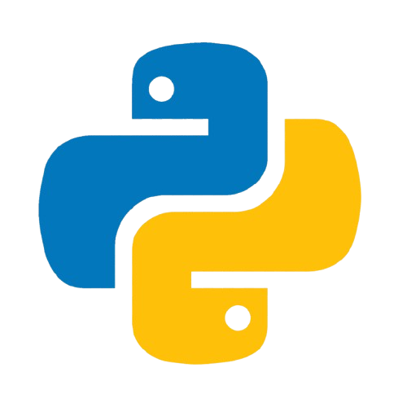
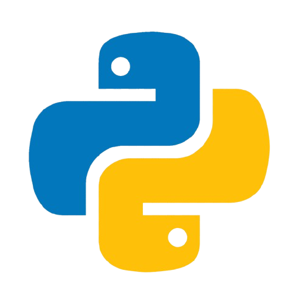
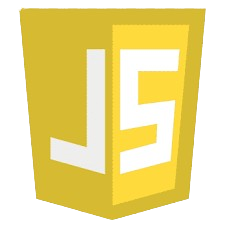
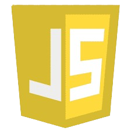

Welcome to My Page!
This is the HOME section. Click on the images below to learn more about each topic.
 

 


What is the C Programming Language?
The C programming language is a powerful, general-purpose, and procedural
programming language that is widely used for developing system software,
applications, and other performance-critical programs. It was created by
Dennis Ritchie in 1972 at Bell Labs to develop the UNIX operating system,
making it one of the most influential programming languages in modern computing.
History of C Language C evolved from an earlier language called B, which
itself was based on BCPL (Basic Combined Programming Language). Dennis Ritchie
designed C to address the limitations of B and to create a more efficient and
flexible language for system-level programming. The language became popular due
to its ability to interact closely with hardware while providing higher-level
abstractions that made it easier to write complex programs.
In 1978, Brian Kernighan and Dennis Ritchie published "The C Programming Language",
which became the definitive guide for C programmers worldwide. Over time, C was
standardized by the American National Standards Institute (ANSI) in 1989 (ANSI C)
and later by the International Organization for Standardization (ISO) in 1990.
Key Features of C Language:
Simple and Efficient: C provides basic building blocks for programs like variables,
data types, functions, and control structures, ensuring fast execution and low memory usage.
Portability: Programs written in C can be compiled and executed on various platforms with minimal changes.
Low-Level Access: C allows direct manipulation of memory using pointers, enabling developers to interact with hardware efficiently.
Structured Programming: C supports the structured approach through functions, enabling code modularity and reusability.
Rich Standard Library: C offers a robust set of standard libraries to perform common tasks like input/output,
mathematical operations, and string manipulation.
Dynamic Memory Management: C provides functions such as malloc() and free() for manual memory allocation and deallocation.
Extensibility: You can extend C programs by integrating assembly code or interfacing with other languages.
How To
My Projects
The C Language Wow
We are starting naglibog pa gud ko unsaon daghan na kaayo kog lines na g copy paste para mo stay ang sub-contents
How To
My Projects
What is the Python Programming Language?
Python is a high-level, interpreted, and general-purpose programming
language known for its simplicity, readability, and versatility. It was
created by Guido van Rossum and first released in 1991. Python is widely
used in various fields such as web development, data analysis, artificial
intelligence (AI), scientific computing, and automation.
Python was designed as a successor to the ABC language, which was intended to be easy to learn but had limitations. Guido van Rossum wanted to create a language that combined simplicity with power, allowing programmers to write clean and efficient code.
Key milestones in Python’s development:
1991: Python 1.0 released.
2000: Python 2.0 introduced features like list comprehensions and garbage collection.
2008: Python 3.0 released, focusing on code clarity and modernization (not backward-compatible with Python 2).
Today: Python is maintained by the Python Software Foundation and has an active community that drives its continuous improvement.
How To
My Projects
What is HTML? (HyperText Markup Language)
HTML (HyperText Markup Language) is the standard language used to create
and design web pages. It structures the content on the internet by defining
elements such as headings, paragraphs, images, links, forms, and more. HTML
is the foundation of every webpage and works in combination with CSS (Cascading
Style Sheets) for styling and JavaScript for interactivity.
History of HTML
1991: HTML was first introduced by Tim Berners-Lee, the inventor of the World Wide Web.
1995: HTML 2.0 became the first standardized version by the IETF.
1997: HTML 4.0 introduced multimedia and scripting capabilities.
2014: HTML5 was released, adding advanced features like video, audio, and responsive design.
How To
My Projects
What is JavaScript?
JavaScript (JS) is a high-level, interpreted programming language that
allows developers to create interactive and dynamic web pages. It is one
of the core technologies of the World Wide Web, along with HTML and CSS.
JavaScript enables client-side functionality such as user input validation,
animations, dynamic content updates, and interactive user interfaces.
History of JavaScript
1995: Developed by Brendan Eich at Netscape and initially named Mocha, then LiveScript, before becoming JavaScript.
1996: JavaScript was standardized by ECMA International as ECMAScript (ES).
2015: ECMAScript 6 (ES6) introduced modern syntax like let, const, and arrow functions.
Today: JavaScript powers modern web applications through frameworks like React, Angular, and Vue.
How To
My Projects
What is PHP?
PHP (Hypertext Preprocessor) is a widely-used open-source scripting language designed
for web development. It is primarily executed on the server-side, meaning the code runs
on the web server and generates HTML to display in the user's browser.
PHP allows developers to create dynamic, interactive, and data-driven websites.
History of PHP
1994: Created by Rasmus Lerdorf as a set of tools to track website visits.
1995: Released as Personal Home Page Tools (PHP Tools).
1997: Improved by Zeev Suraski and Andi Gutmans, leading to PHP 3.0.
2000: PHP 4 introduced the Zend Engine for better performance.
2015: PHP 7 enhanced speed and memory efficiency.
2020: PHP 8 introduced new features like the JIT compiler for performance improvements.
How To
My Projects
About
I am creating this webpage for my **Integrative Programming and Technologies** project. This webpage will provide a brief description of various programming languages and how to use them. I have also included my experiences working with these languages below these page.